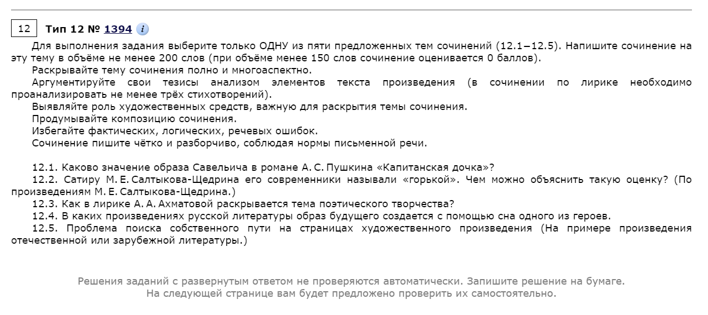

Начнем с русского языка. Что нужно знать для сдачи экзамена в 2023 году?
Экзамен ЕГЭ по русскому языку не поменял своей структуры. В нём всё также есть 2 части, которые различаются по формату задани
1-я часть: 20 заданий с кратким ответом (тест);
2-я часть: 1 задание с развёрнутым ответом — сочинение.
Как изменился экзамен в 2023 году:
В этот раз экзамен будет немного отличаться по сравнению с прошлыми годами. Вот список изменений, которые коснулись 2-й части экзамена — сочинения:
Максимальный балл по критерию К2 снизили с 6 до 5.
В этом же критерии теперь нет понятия «негрубая ошибка», а значит, шансов получить баллы с ней стало меньше.
Изменились критерии К1, К2, К3 и К12 — в них скорректировали правила оценки работ с фактическими ошибками.
Теперь экзамен не ограничивает учеников в объёме сочинения. Раньше правила гласили, что нужно написать работу на 150–300 слов, в 2023 году — просто не менее 150 слов.
Список тем включенных в экзамен смотрите в разделе меню "Русский язык".
Вступительные экзамены. Их часто выбирают абитуриенты, имеющие дипломы о среднем образовании.
Программа вступительного испытания по русскому языку разработана для абитуриентов, имеющих право сдавать экзамены в традиционной форме (не по результатам ЕГЭ).
Программа составлена на основе федерального государственного образовательного стандарта среднего общего образования. Основная цель данной программы – дать перечень тем, необходимых для повторения и подготовки при поступлении в университет. На экзамене по русскому языку абитуриент должен продемонстрировать свободное владение русским литературным языком. Поступающий должен уметь анализировать языковые единицы, определять стиль текста, применять основные орфоэпические, лексические, грамматические, орфографические и пунктуационные нормы современного русского литературного языка.
Экзамен проводится в письменной форме. Абитуриенту предлагается вариант заданий, проверяющих знание содержания предложенных ниже тем. Каждый вариант, оцениваемый по стобалльной системе, включает от 10 до 25 заданий, в зависимости от образовательной организации. Максимальная оценка за экзамен – 100 баллов. Минимальная положительная оценка по результатам собеседования должна быть не ниже минимального количества баллов, установленного Правилами приема в ВУЗы. Абитуриент, получивший оценку ниже установленного минимального количества баллов, к дальнейшему конкурсу не допускается.
Теперь разберемся с литературой. Что нужно знать для сдачи экзамена?
За все годы существования ЕГЭ литература практически не менялась, если сравнивать с другими предметами. Лишь 2022 год ознаменовался достаточно серьезной перестройкой экзамена: поменялась структура, стали оценивать грамматику, добавили зарубежную литературу и т. д.
В 2023 году ЕГЭ по литературе вернулся к старым традициям: в нем изменилась только формулировка задания 9 — снято указание точного количества правильных ответов в вопросе (ранее всегда было 3). Теперь ученик должен выбрать ВСЕ правильные ответы, а это значит, что их количество может варьироваться.
Структура экзамена не изменилась. Состоит из двух частей:
1-я часть: 20 заданий с кратким ответом (тест);
2-я часть: с этого года имеет 5 вопросов (несколько лет назад их было всего 3), из которых по личным предпочтениям нужно выбрать только один и написать объемное сочинение не менее 200 слов (одно из изменений этого года). Вот примеры тем из демонстрационного варианта экзамен-2023:

Как получить высокий балл на экзамене по литературе?
Формула успеха простая: теоретическая база + знание структуры экзамена. Когда-то она помогла набрать мне 98 баллов, а теперь помогает готовить учеников, которые, как и вы, мечтают поступить на бюджет в лучшие вузы страны.